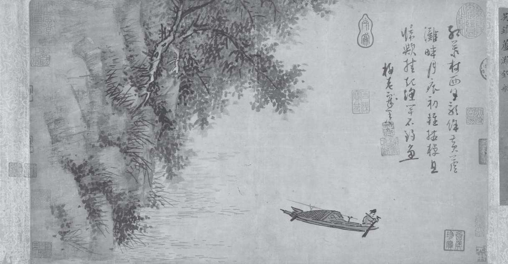
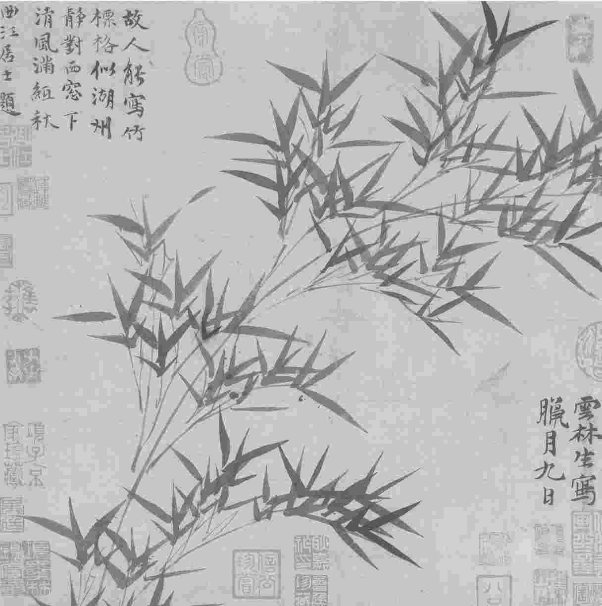

诗意地栖居
在《芦滩钓艇图》中，吴镇（1280-1354）的诗 [1] 所占据的空间超过了作为主角的渔夫，虽然比起水边的芦苇岸来它还是小些。书、画和诗的含义融为一体，这幅手绘卷轴浓缩了自然界和它内在的模式，堪称微型宇宙。
他凝神注视光影的变幻，似乎在劳作之外看到了什么。观画者或许会在他的休憩中体会到许多种情绪，从沉静到坦然，再到不安，甚至到阴郁，然后或许又循环一遍，因为渔夫可以象征失意的文人，这在堵死了出仕之路的元朝尤其能触痛他们的心。这种情感的起伏与水面的波浪和风中的芦苇一样，增强了作品的感染力。画常被称为“无声诗”，它能传递难以言表的情绪，书法被看作性格的窗口，而诗则负有更复杂的使命，不仅要唤醒自然的种种神秘，还要让它们激发情感的共鸣和历史的联想。

图5 吴镇是元朝四大家之一 [2] ，在这幅《渔父图》（又称《芦滩钓艇图》，约1350）中，他将诗、书、画融为一体
在中国，诗歌向来都承担了许多功能，修身养性、教化社会、治理天下都在其中。人们认为诗歌呈现了自然的运行模式，因而可以在易逝的时间中发现意义，也可调节身体的“气” [3] ，培养善的品格。陆机（261-303）在《文赋》中写道，“诗缘情而绮靡”。诗歌表达复杂情感的能力使得它既适合幽独的沉思，也适合众人的雅集。许多诗都是应景之作，所以在标题或序言中记录了时间、地点和场合。互赠此类诗歌有助于见证并深化彼此的关系，也能促进政治的稳定。
正因诗歌有如此丰富的用途，它在古代中国就成了最受尊崇的文学体裁。古代的朝廷会采集民歌，经史子集各类书籍都收入了诗歌。到了公元3世纪，上层的扶植已经可以让文人专心作诗，而且写诗几乎成了士大夫阶级的必备才能。7世纪末，唐朝更把这种要求变成了制度，写诗作赋被纳入国家统一的科举考试的科目。虽然现代学者对唐朝以后的诗评价不高，认为基本是因袭前人，但在整个帝制时代，诗歌仍保持了文学至尊的地位。
诗歌的感染力经常需仰赖理性所不能把握的“气”，中国诗歌尤其擅长表达微妙易变的情绪。例如在《二十四诗品》中，诗评家司空图（837-908）不仅讨论了“悲慨”和“旷达”这样的情感，而且还将“精神”等动态情绪与“缜密”等更静态的情绪彼此对照。司空图的这篇诗话本身就是一首长抒情诗，它既可形容诗，也可形容人。在开篇描绘“雄浑”的短章之后，立刻有“冲淡”来与之平衡，并突出了这种特质的飘忽难测：
其中一些情感（或者司空图所称的“品”）聚焦于人的世界（“典雅”），另一些则指向人类陈规之外的东西（“超诣”“飘逸”）。“自然”“实境”等品侧重可感的表象，“含蓄”“流动”等品则突出无形的变化。这些诗品之间经常彼此交叠，体现了中国诗歌各种维度相交织的丰富质感。以山水诗为例，它不仅可以提供超脱红尘的一条路径（“飘逸”），也可呈现人心与自然的亲密交流以及自己的心境（“冲淡”）。
实境 [4]
从一开始，中国古诗就惯于思索人在自然中的位置，这催生了对“实境”的抒情回应，诗人们意识到人生短暂，所以及时行乐成了长盛不衰的主题。快乐无论多么易逝，在《诗经》（前1100-前600，世界最早的有韵诗） [5] 中都占有重要的一席之地。除了纪念庄重仪式和王朝征服事业的作品外，一些诗歌也赞美了情欲的简单快乐，表现出对时间流逝的深切感受。正因生命不可长存，人更应享受此刻，这是《唐风·蟋蟀》传达的讯息，诗的第二节这样开头：
这类诗歌表达了随自然律动而生活的激情，以及求爱、成婚、耕作、舞蹈、宴饮的快乐。许多作品也告诫人们不要浪费人生的宝贵光阴去追逐荣名，或者苦思冥想人世的奥义。《小雅·无将大车》声称，健康比功业重要：
由于诗歌将人生与季节的变化连在一起，当社会习俗的要求与季节的标志不一致时，人就会感到痛苦和焦虑。例如在《邶风·匏有苦叶》中，那位年轻的女子之所以绝望，就是因为她的未婚夫没能按照当时的风俗，在河冰融化之前来娶她。这种通过自然景物来曲折抒发快乐、恐惧和其他情感的手法（文学修辞所称的“移情”）后来成了东亚各国文学传统的主流。
根据传说，《诗经》的305首风、雅、颂是朝廷官员巡游全国采集来的。无论真正来自民间，还是为宫廷而作，它们最初很可能都是有乐可唱的；正因为是口头文学，它们使用了大量的重复、拟声和专业歌者喜好的其他手段。虽然后来仍有变化，《诗经》大体成型于公元前600年左右，它是中国最早的诗歌总集，既奠定了文学传统的基础，也为我们了解古代中国文化提供了重要的佐证。
从最早的传疏开始，学者们就从这些诗中引发出许多道德教训，这种让文学服从于教化目的的做法开创了一个影响深远的先例。孔子编定《诗经》的说法更让后世竭力在作品中挖掘道德和历史的微言大义，此类讽喻式的解读经常都有政治动机，直到宋朝都很盛行。公元1世纪添加的著名《大序》继承了孔子的诗观，阐发了出自《书经》的“诗言志”的概念。由于“志”既可指自发产生的情感，也可指具备道德意义的志向，这个定义就赋予了诗歌载道的使命。儒家学者孔颖达（574-648）在为《大序》作疏时，作了进一步的论述，点明了情感和志向的共同起源：“在己为情，情动为志，情志一也。” [6]
及时行乐也意味着歌颂自然世界，《大序》确立了中国诗学感应外物的一套特有话语。如果说“赋”是铺陈，“比”是对照，“兴”则是情感反应的触媒。“兴”经常出现在诗的开篇，引入核心意象，“相鼠有皮”“厌浥行露”“隰桑有阿”等首句都是例子 [7] ，用以起兴的形象或声音经常反复出现，烘托情绪，形成节奏或声音模式。与强调摹仿的西方诗歌不同，这些诗歌记录了触发情感的外物，表明它们不是在摹仿世界，而是直接对世界做出回应。“兴”的概念将诗歌擢升为共同情感的载体，而不仅仅是诗人向读者表达自己的主观经验。（和许多中国的文学术语一样，“兴”对情感反应的强调也盖过了对形式特征的关心。）
关注此地此刻后来一直是诗歌的主导模式。许多记述简单快乐的诗都含蓄地抗议了将人视为工具的做法，中国源远流长的反战诗传统也是以这种重要的方式来揭示帝国扩张的代价。例如，在王翰（687-726）的绝句《凉州词》中，一位绝望的士兵就是用无数不为人知的战死者为自己的醉酒行为辩护：
葡萄美酒夜光杯，欲饮琵琶马上催。
醉卧沙场君莫笑，古来征战几人回？
超诣
偏理性的传统经常与北方相联系，它发源于聚焦“实境”的《诗经》；南方的传统则更富于神秘主义，它盛行于长江流域，也就是古代的楚国（前7-前3世纪）。流传至今的《楚辞》是此类诗歌的总集，它展现的是一种活跃的萨满灵媒文化，这些巫师不仅能与自然神祇通话，甚至能让神灵附体。《楚辞》中有许多唱给云中君、河伯、湘君和湘夫人的诗句 [8] ，女神和女巫在作品中地位高贵，偏离了男尊女卑的主流传统。许多更早的诗，包括《诗经》在内，都是四言为主，《楚辞》的诗行则更长，因而有了更多的叙事空间。它从未正式进入“经”的行列，但公元2世纪的一个版本因为遵循了高规格的注疏传统 [9] ，为它赢得了特殊的声望。
《楚辞》里最著名的《离骚》是中国记录中最早有名姓的诗人、楚国政治家屈原（前340-前278）所作的叙事长诗。诗中的主人公一再提及时光荏苒，韶华难驻，他所感受到的建功立业的压力和《诗经》对简单快乐的认可形成了强烈对照。无端遭受诽谤和流放后，屈原害怕他的一腔忠心要付之东流，在这首374句的哀歌里描绘了一个是非颠倒的堕落世界 [10] ，正直之士遭遇毁灭，邪僻之人却飞黄腾达。
《离骚》主要被看作一首表现政治不满的长诗，它确立了长盛不衰的怨诗传统 [11] 。和《诗经》中的抒情诗一起，《离骚》是某种意象的典范之作：用失意的恋人来比喻遭君主冷遇的大臣。诗的开篇现实主义色彩相对较浓，讲述了主人公如何未能获得意中人的垂青。担心意中人的美在时光中枯萎，眼见周围的世界一片污浊，主人公决心远行去寻找自己的知音 [12] ：
作品接下来描绘了主人公在天界的神秘旅程以及他不顾一切挑战命运的努力。他一路向西，似乎要赶到西沉的太阳之前。最后，守卫天门的帝阍嘲笑他，而且他找遍楚国也没有发现堪与自己相配的人，巫师灵氛建议他到国土之外去搜寻，他接受了建议。这个决定或者意味着精神上的超越，或者意味着他弃绝了祖国，要去投奔未知之地。 [13] 正将飞升之际，他却踌躇起来：
陟升皇之赫戏兮，忽临睨夫旧乡。
仆夫悲余马怀兮，蜷局顾而不行。
对故土的忠诚、对人世的牵挂和对情感的眷恋，让他无力抛下这个世界。而另一方面，天命限定了他的自由，勇敢的挑战却无济于事。沮丧的主人公决定仿效古代贤人的榜样，投水自尽 [14] 。
传说屈原在汨罗江自沉，《离骚》也被视为他的自传。这种解读强化了一种历史悠久的传统：中国学者惯于用作者生平来解释作品，又反过来用作品来重构作者的生平。这种传记研究法虽然看似循环论证，却突出了文学的现实意义。现代评论家或许会指责此类求助于“意图谬误” [15] 的不羁路数，然而将作品的主人公当作诗人自己的阅读习惯也表明，中国的文学传统敏锐地意识到，诗歌是一种类似戏剧的事件，是主人公对特定情境做出的回应。从殉难的屈原开始，诗歌就是个人抒发自我、表达欲望的主要形式，从而在“怨”的文学传统中确立了权威地位。
典雅
面对政治动荡与自然灾难，诗歌的优雅整饬可以安抚人心。在历史的纷扰与情感的波动中，某些体裁、主题、意象一再出现，印证了熟悉的形式所起到的慰藉作用。无论诗人们遵循的是应景诗的陈规、山水诗的隐逸传统还是社会诗关怀现实的传统，他们都经常采用改写的形式，独创性显然不是他们的目标。
其中一条发展线路是，屈原的《离骚》作为南方传统孕育了赋。大多数中国诗歌都倾向含蓄而非铺陈，但在大规模建立典章制度的汉朝，这类以不厌其烦的铺陈为特色的诗体却成了主流。“赋”在英语中也被称为“押韵的散文”（rhyme-prose），因为它们中的一部分类似一种韵文与非韵文融合的散文。“赋”的原意是“铺开”或“展开”，早期的赋喜欢列举一长串花草、鸟兽、佳苑、名都，并加以细致的描绘。
长赋一般聚焦于猎苑与都城，短赋则经常吟咏噩梦、琴瑟、鸱鸮、猕猴以及笼中鸟（常象征着怀才不遇的文人）。作者们常按阴阳五行学中对应的类别来构建自己的赋，这强化了中国人对宇宙之“文”的信仰。例如在祢衡（约173-198）《鹦鹉赋》的开篇，鹦鹉的出生地、外貌和本性就遵循了五行的对应关系，金（鸟的本性）对应西（出生地）和白（颜色），而火（鸟的潜能对应赤和南（或许是鸟被捕获之前本来的目的地））
按照宫廷咏物赋的程序，在介绍了鹦鹉的异国出生地和五行对应物之后，祢衡讲述了鹦鹉被捕获的过程，但他措辞巧妙，没有破坏文本的审美愉悦。然后他描绘了鹦鹉在笼中的生活，作品结尾表达了鸟对主人的感激和忠诚。然而，祢衡并没有被委婉讽喻的传统束缚住，而是非常直白地描绘了鹦鹉“惨以憔悴”的容貌，以使“闻之者悲伤，见之者陨泪”。接近终篇的几句表明，无论鹦鹉多么热切地渴望回家，这个梦想都不可能实现了，因为主人已经毁掉了它的翅膀：
有了这些诗句，篇末所表达的鹦鹉效忠回报主人的意愿就变得不足信了。赋的中间其实已经隐晦地传递出诗人的指责，他追问鹦鹉悲惨命运的缘由：“岂言语以阶乱，将不密以致危？”此处对污浊官场的暗示让读者意识到，赋的隐喻潜藏着微妙的叙事力量。
虽然在相信文如其人的评论者看来，偏好华丽的赋是可笑的雕虫小技，但是赋在整个中古阶段（直至9世纪）都是最受人尊崇的韵文形式。显贵也擅长这种典雅的文体，曹植（192-232）的《洛神赋》可以为证。当洛神因为主人公的犹疑也变得不安时，曹植充满崇拜的描写也突然忧郁起来。与洛神的失望相呼应，风神屏翳收敛了晚风，水神川后止息了波涛，众神女、六龙和水禽伴着洛神返回天上。后世有人认为，曹植的这篇赋其实是曲折表达了他对曹丕之妻甄后的爱慕，学者们对此多有质疑，但无论如何，这些神话和历史相融合的传说给许多诗歌、小说与戏曲提供了灵感。
悲慨
与赋铺陈繁复的手法相比，在中国漫长的民歌和诗的传统中，抒情模式占了上风。在汉代，朝廷将管理音乐和诗歌的职司交给了乐府，当时在这个机构工作的多达九百余人。官员们从帝国内外广泛采集诗乐，把旧有的主题和结构与新的韵律结合起来。到了公元前后，音乐趋势的变化使得五言诗成为主流，一些早期的五言诗堪称世界文学的瑰宝。
现存最早的五言诗集是东汉（25-220）末年的《古诗十九首》。这些作品似乎都很直白，其中几首是征戍诗，第二首则表达了一位女子独守空房之苦。和许多中国诗一样，这首作品也以景物描写开篇，然后才揭示主人公的情感。
青青河畔草，郁郁园中柳。
盈盈楼上女，皎皎当窗牖。
娥娥红粉妆，纤纤出素手。
昔为娼家女，今为荡子妇。
荡子行不归，空床难独守。
在前六句中，春天景色的描写由远及近，直至心情凄凉的主人公出场。河边是一片树林，树林环绕着闺楼，楼上凭窗坐着一位孤独的女子。从自然世界到人的世界，描写一步步进入了她的闺房。主人公困守家中的处境为她优美的姿势增添了哀婉的感染力。无法脱身的她只能将手伸出窗外。
后四句切换到这位女子过去与现在的遭遇。她是“荡子妇”，意味着她已经被抛弃。但她的丈夫若不是“荡子”，当初会娶这样一位卑微的“娼家女”吗？虽然在开篇的描写中，这位女子只是一个静态的对象，但在这里，诗人却进入了她的视角。（由于原作和大多数中国古诗一样，没有用人称代词，所以主人公既可能是也可能不是叙述者。）当她看见那张空床，她几乎也看见了床边的自己。直到最后一行她的孤独才直接表达出来，但开篇简单、客观的描写已经在为结尾积聚力量。读者会发现，开篇所呈现的表面被最后一行的强烈情感穿透。虽然每层描写都充满美的诱惑，对于诗中女子而言，她却被绑缚得更紧。在自然界永恒的循环中，她无法抽身的孤单更觉显眼。相对于变动不居的万物，她是不动的、安静的。
真是如此？有人在最后一行里读出了一种渴望幽会的冲动，宇文所安的译文就体现了这一点：“孤独的床不可能长久是空床。” [16] 诗中的这层暧昧提醒我们，动与静始终处于紧张状态，物极必反。
弃妇的主题在中古及以后更趋流行，它常象征人生的短暂易逝。虽然流传下来的此类诗歌多半出自男性作者，他们却经常选取女性作为作品的主人公，并以此暗喻怀才不遇的忠臣，其中宫怨诗逐渐成了一个主要的子类别。从谢朓（464-499）的《玉阶怨》可以看出宫怨诗的优雅。这首诗见于6世纪的一部选集《玉台新咏》，是五百首“宫体诗”中的一首。
夕殿下珠帘，
流萤飞复息。
长夜缝罗衣，
思君此何极。
中国两大诗人之一的李白在一首同题诗里改写了谢朓的作品：
玉阶生白露，
夜久侵罗袜。
却下水晶帘，
玲珑望秋月。
这首诗之所以成为广受赞誉的杰作，一个原因是它近似摄影的技巧，视觉焦点微妙地向上推移（从台阶到足，再到帘，最后到月）。虽然是改写，它的地位丝毫未受影响。重新加工流行的主题，例如怨愤、讥刺、弃妇、及时行乐等等，给了诗人专注于技巧的机会，丰富的典故也让作品更值得咀嚼。正如集诗人、画家、书法家于一身的黄庭坚（1045-1105）评价古代大师时所说，“古之能为文章者，真能陶冶万物，虽取古人之陈言入于翰墨，如灵丹一粒，点铁成金也” [17] 。诗人化用前人的词句，引起知音读者的情感共鸣，用道家的炼丹术来形容，甚为贴切。
随着音乐的演变，中国诗歌的另一种主要样式-词-逐渐发展起来，它着重表现的是以爱情、慵懒状态和惆怅意绪为内容的文化。从8世纪开始，这些词都是为音乐而写的，其中有些曲调是从中亚传来的。词和诗不同，要求用长短句，由于每行字数不同，它们的灵活性更大。词倾向于描写景物、送别、怀人，或者表达凄凉恋旧的情绪，或者感慨历史，或者称赞美人，尤其偏爱抒发弃妇的怨愤（经常仍象征着怀才不遇的大臣）。
因为经常要歌伎来表演，所以有些词用了较多的口语，严肃作家则竭力将自己的雅词与流行的俗词相区分。然而，上流社会的女子也填词。中国最著名的女诗人李清照（1084-1151）就是一位作词的顶尖高手。在女真人征服北宋、她被迫南渡之前，她过着养尊处优的生活，可以随意浏览丈夫丰富的私人藏书。后来，她的丈夫死于疟疾，她的诗词也哀伤到了极点。在《武陵春》里，主人公在上阕慨叹“物是人非”，到了下阕更直面自己的无限悲苦：
闻说双溪春尚好，
也拟泛轻舟。
只恐双溪舴艋舟，
载不动许多愁。
疏野
中国人相信，日常世界的所见所闻无一不是道的体现，所以具体的景物也可以清澈地反映出不可触摸的感情。中国诗所理解的感情并非浪漫主义式的“内在”情感，而是在具体情境中的人际交流所激活的某种东西。与知己相处的快乐在中古时期以“竹林七贤”为代表的社交群体中是尤其活跃的主题。这群特立独行的文人据说总是在嵇康（223-262）的庄园宴饮，欣赏美景，写诗清谈。这些诗人渴望摆脱政坛的纷争，赞颂简单的乡村生活，后世对于他们的种种享乐有诸多玄想。
七贤中最重要的诗人是阮籍（210-263）。他的八十二首《咏怀诗》以情取胜，又富于深沉的哲思。在第六首中，阮籍钦羡古时的东陵侯在秦亡之后过上种瓜的生活。在赞美了西瓜“曜朝日”的“五色”之后，他对比了瓜农和官宦的生活：
膏火自煎熬，
多财为患害。
布衣可终身，
宠禄岂足赖。

图6 长期以来，文人都看重竹子，认为它是忠诚、坚定、正直的象征。竹子中空的特性也使它成了表示虚心的意象。所以，竹子是画家喜爱的题材，这幅出自倪瓒的14世纪作品就是例子
这种沉思式的田园诗其实也是政治抗议的一种表达方式。虽然儒家传统告诫统治者将劝谏看作促成清明政治的忠行，真正敢于发出批评之声的官员却经常被贬职外放。当劝诫和抗议失效时，有德之人还可退隐山林。这样儒家的忠臣就变成了隐士（字面意思就是“隐身的士人”），退出了追逐名、利、权的俗世。
一面是建功立业的渴望，一面是在简单快乐中寻求安慰的梦想。赞美自然，赞美真情，并未真正解决这样的矛盾。入世和退隐的冲突在陶潜（365-427）的许多诗里都有体现。他的诗集经过他自己和后世许多人的编辑，虽然在生前并不被人看重，在宋代却受到了理学家的极力推崇，他们欣赏他的作品在较大程度上摆脱了当时佛教的影响。由于他们的称许，陶潜（陶渊明）成了隐士诗人最著名的代表，被尊为田园诗的创立者。
在陶潜的三联诗《形影神》中，入世雄心和简单快乐之间的冲突体现在自我不同部分的对话之中。在《形赠影》里，“形”先是哀叹死终将抹掉个人的一切，然后宣扬一种享乐主义的解决办法：“愿君取吾言，得酒莫苟辞。”在《影答形》里，“影”承认酒或许能给人慰藉，但闲逸永远比不上行善立名、身死名存有价值。最后，在《神释》里，“神”试图提出一条折衷之道。它指出饮酒可能缩短人宝贵的寿命，诘问死后谁会记得自己，所以主张接受命运，不要庸人自扰。
甚念伤吾生，
正宜委运去。
纵浪大化中，
不喜亦不惧。
应尽便须尽，
无复独多虑。
“神”对尘世烦忧的鄙夷反映了陶潜的观点。在三十三岁那年，任职仅八十三天，他就辞官回乡了。在《归园田居》五首中，他形容自己是“羁鸟恋故林”，所以决定抛弃官场这个“尘网”。陶潜因为不以五斗米折腰而闻名，他认为辞官是保持正直品格的恰当做法。然而，他的这组诗也表明，摆脱忧虑是很难的。回归故里的小农场固然可以远离官场的羁绊，但诗里的主人公却又陷入了更大的自然之网，这里的力量同样非他所能控制。“晨兴理荒秽，带月荷锄归。”他在自然中觅得了一个和谐的位置，这的确令他愉悦，但他却为自己的温饱和庄稼的收成而焦虑。不同版本的文字差异加剧了评论者的争论：这些诗传达的情绪究竟是不安还是平静？对于此类语言交流中的矛盾，陶潜自己在二十首《饮酒》的第五首中有一个著名的说法：“此中有真意，欲辨已忘言。”
飘逸
到了5世纪，由于在佛教影响下，人们更加关注自然世界，上述传统又演变出了第二类景物诗-山水诗。这类诗最著名的代表包括与陶潜同时代的谢灵运（385-433），还有诗画皆长的王维（699-761）等禅诗作者。据称王维诗中有画，画中有诗，这种融合在他的绝句《鹿柴》里可见一斑。
空山不见人，
但闻人语响。
返景入深林，
复照青苔上。
诗作没有点明任何主体，王维可能故意借此表现人完全沉入自然的状态。第一句“空山不见人”并无主语，一旦添加确定的人称代词，就将在多种重叠的可能性中锁定一种。特定主体的缺席是中国古诗中的常见现象，尤其是山水诗。在翻译成西方语言时，经常不得不添加主语，这是令人遗憾的，因为这种暧昧可能是对自我问题做出的一种艺术回应。中国诗并不赞美单个的主体，反而经常让自我隐身。通过淡化“我”与“物”的区分，这些诗所沉思的世界是个性经验较少横亘其间的世界。
沉思式的山水诗经常融合了在中国发展起来的一种独特佛教形式-禅（西方人更熟悉的是它的日文音译Zen）。禅的教义摒弃了多数印度佛教流派的出世倾向，强调顿悟，并且这种顿悟可以通过多种方式获得：冥想，插花之类日常活动，以及对平凡生活细节的体察。
除了王维这样的居士诗人，王梵志、寒山等僧侣诗人也用诗来表达他们的宗教体验。（寒山或许并非某个人的名字，而是众多佛教抒情诗辑录者的一个集体笔名。）虽然禅贬低语言的重要性，文人们却日益喜欢把诗歌的审美体验比作禅坐的顿悟。在《沧浪诗话》里，严羽（约1195-1245）明显以禅喻诗，归纳了诗歌的五法（“法”有佛法的意味）。在他的体系中，借助体制、格力、气象、兴趣、音节这五法，诗就能实现高、古、深、远、长、雄浑、飘逸、悲壮、凄婉这九品。 [18]
在整个帝制时代，诗歌理论都体现出这样的精神指向，即使以社会关怀为己任的士大夫也经常将诗歌创作视为悟道之途，并赞美诗歌的这一功用。大师级诗人王士祯（1634-1711）便是一例。他担任左都御史、刑部尚书这样的高官，但在其诗话中却推崇个性化的、不可言传的“神韵”，所谓“神韵”就是通过与客观世界“妙在象外”的特质相融合而获得的一种直觉。
感时
与寄情自然或者悟道参禅的诗人不同，堪称中国最伟大诗人的杜甫（712-770）受儒家的价值观影响更深，所以他写诗的目的是为国尽忠。虽然一生仕途坎坷，他的诗却为唐人创造了一种集体的身份意识。最终导致数千万人丧命的安史之乱（755-763）爆发后，杜甫写了《春望》，哀叹自己所在的城市已沦为一片废墟。
这首诗作于公元757年春，在此之前的755年12月，安禄山的胡人军队已经攻占首都长安。当时杜甫的生活和诗歌都以京畿为中心，第一句中的“国”可能既指都城，也指整个国家。
因为动词“望”也有希望或盼望的意味，标题也暗示着遗憾与怅惘，可以理解为“观看本应是春天的景象”。
由于要抒发的感情如果直接体验或许太痛苦，诗人便将它投射到自然景物之中，以“移情”的方式悲叹国都满目疮痍，而自己的健康也每况愈下。在诗的前半部分，抒情主人公先是远眺群山，然后环视城池与草木，最后俯视露水覆盖的花，仰望空中的鸟。在后半部分，他再次望向远方的烽火台，想起家人，注意到自己日渐稀疏的头发。当他的目光由远及近地游移，画面也从模糊的远方切换到微小露珠构成的清晰近景，与此对应，他的情感也从担忧国家过渡到担忧自己和遥远的家人。
春望
国破山河在，
城春草木深。
感时花溅泪，
恨别鸟惊心。
烽火连三月，
家书抵万金。
白头搔更短，
浑欲不胜簪。
在首联中，自然的恒常让诗人惊觉人类文明的无常。第二句将春天的繁盛与都城的破败相对照，肆意蔓延的绿草意味着都城已是残垣断壁。然而植物也可能暗示，国家虽已战败，仍有复兴的可能。自然顽强的生命力是否有希望的寓意，这取决于一个选择。如果说首联表现了自然对人类的悲苦无动于衷，颔联则记录了自然与人感同身受的哀伤。虽然和颔联、颈联不同，首联并不要求对仗，杜甫却使用了对仗，从形式上强化了这种对照。
颔联的强烈移情效果也让它获得了两种解读的可能。或者是诗人因为花和鸟而溅泪、惊心，或者是花本身溅泪、鸟自己惊心。两层意蕴交融形成的歧义表现出学者们所称的中国诗的“浓缩”特质或者“双重语法”。读者或许会问，鸟为何会让诗人惊心？或许是因为它们的迁徙反衬出他深陷敌城的困境。在诗歌传统里，花鸟经常是给人带来欢乐的景物，但中国诗人用它们，尤其是鸟的叫声来抒发悲伤，或烘托主人公的痛苦，也并不罕见。
颈联由感慨国家的危难转到沉思个人的哀痛。烽火在古代是守军之间传递警讯的手段，所以象征着战争，从而点明了让花溅泪的混乱时局因何而起。第五句告诉我们，紧急的战况已经持续三个月，正如“三月”与“万金”对仗，整个颈联也与颔联平行，对家书的渴望呼应着鸟“恨别”的情绪。
最后三句从客观的描绘转向主体反应的记述，头发日渐稀疏的意象既伤感，也有一丝滑稽。虽然尾联并未减缓主人公的哀伤，它却有可能传达了情绪的某种变化，就是从前文的痛苦转为戏谑的自嘲。杜甫在757年不过四十五六岁，白发不断掉落或许也暗示战争让他未老先衰。抒情主人公有可能是用拔掉头发的方式来发泄无助的焦虑情绪吗？中古诗歌里有许多这样的例子，由于无力反抗时代的命运，诗人只能选择接受，面对死亡人数仅次于“二战”的安史之乱就更是如此了。虽然叛乱平定后，唐朝又挨过一个半世纪才最终覆灭，但在晚唐的诗歌里，人类努力的残酷幻灭感和短暂人生固有的悲哀已融汇在一起。
豪放
和杜甫的厌世情绪不同，其他诗人更喜欢“豪放”。回溯历史，这个标签可以贴在与杜甫同时代的李白（701-762）身上。作为一位特立独行的旁观者，一位求仙访道的出世者，李白深受不合流俗的人推崇；他代表了一类中国诗人，他们纵情饮酒，有时是为与知己欢宴，有时是为挣脱遮蔽现实的日常意识。“三杯通大道，一斗合自然。”李白在《月下独酌·其三》中如此写道。
到了宋朝，由于越来越多的文人不再将诗歌与一个宏大的意义体系联系起来，诗歌的抒情和教化功能究竟有多大价值便成为激烈争论的话题。与许多唐诗的哀婉精致不同，宋诗在结构上更灵活，语汇上更贴近生活，有时甚至到了随意为之的程度。到了12世纪早期，文人，尤其是那些不谋求或者未获得官职的文人，开始结成诗歌群体。虽然早先的诗人也有群体，宋朝的诗人却形成了明显的“派”（“派”的原义就是水的支流）。由于诗歌传统汇聚的文本越来越多，诗人越来越难以全面掌握，这些派别所确立的经典范围就趋于狭窄。这类诗歌因为刻意为之而倾向学究化，豪放的诗人认为这是一种缺陷，决心摆脱。
诗人政治家苏轼（1037-1101）反对学究气，他用带有挑衅色彩的想象来对抗贬谪生活的痛苦。他虽然尊重过去的传统，却不缺乏批判的精神，这在《读孟郊诗二首·其二》的第一节和第三节表现得非常明显：
夜读孟郊诗，
细字如牛毛。
寒灯照昏花，
佳处时一遭。
初如食小鱼，
所得不偿劳，
又似煮彭越，
竟日嚼空螯。
在第五节也就是最后一节，苏轼提出了另外一种选择：
何苦将两耳，
听此寒虫号。
不如且置之，
饮我玉色醪。
苏轼身上既有佛家色彩，也有道家色彩，他这种包容的态度促进了所谓“豪放派”的发展，后来人们常将豪放风格与更细密含蓄的婉约风格相对照。
印刷术让更广泛的阅读群体接触到诗歌，13世纪出现的重要诗话、韵书扩大了写诗者的阵容，于是这种风格的区分以及与之相伴的关于诗歌目的的争论也更加激烈了。在其中一个阵营里，出现了一股很有影响的复古潮流，这些人强调，写诗者应熟谙从前代大师，尤其是盛唐诗人那里习得的“诗歌风格”。 [19] 与之抗衡的派别则认为唐朝以后的许多诗作都是平庸无趣的仿作，他们担忧模仿会窒息诗人的创造力，主张个性化的表达，推崇情感而不是道德意图，并且以一种享乐主义的态度对待文学。 [20] 当各个文学群体为诗法与个人独创力孰长孰短而争执不休的时候，即使看重个性的作者其实也相信前人诗法的价值，只不过他们把诗法比作佛教譬喻中的“筏”，一旦登岸，就应抛弃。诗歌团体的影响不断扩大，其中一些甚至欢迎女性和圈外人参加，越来越多的读者都熟悉了这些论争的内容。
写诗论诗的女性日益增加，到了17世纪中叶，王端淑、黄媛介这样的女作家已开始创造一种迥异于传统的生活。她们有男性师长的引导，有知音般的丈夫鼓励，还有文人家庭赞助作品的出版，不仅可以写诗作文，还可教授其他上层女性，甚至编辑文选。她们还时常泛舟赏玩，饮酒唱和，王端淑的《名媛诗纬》（1667）之类的文集更在促进女性写作方面起到了开创性的作用。在书的序言中，她的丈夫俏皮地责备她为写诗忽略了家务，但现存的记录表明，她对丈夫和小妾都尽心尽责，关心备至。
先前的女诗人大多只以相思怀人为题材，这些新的女诗人却有不少表达了对明朝故国的忠诚。她们对个性表达有一种新的信心，因而敢于翻新传统的比喻和语汇，黄媛介的《题山水小幅》就是一例：
懒登高阁望青山，
愧我来年学闭关。
淡墨遥传缥缈意，
孤峰只在有无间。
她的这首诗表达了转向内心的愿望，我们于此可以发现诗人们面对满族征服和清初统治的艰难处境。在抵抗与屈从之间挣扎，文人们越来越将美学信念与政治立场绑在一起。以前的诗派往往建立在地域或者师徒关系基础上，在清朝的盛期，理论原则成了划分派别的关键。例如，大师级诗人袁枚（1716-1797）为了对抗卷土重来的复古主义，举起了“性灵”的大旗，主张一种非常现代的个人主义态度，下面这几句诗可为证：
人生行乐耳，
所乐亦分类。
但须及时行，
各人自领会。 [21]